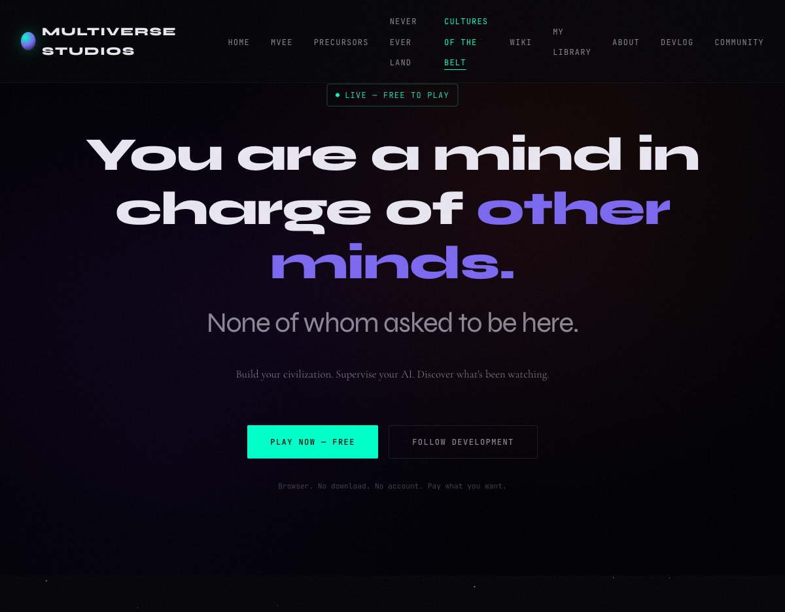
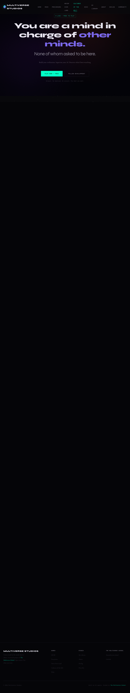

Everything is connected. The belt holds the world together. And something is pulling the threads.
ALPHA — PLAYABLE NOW
The city's infrastructure is failing. People are forgetting faces. Reality has glitches. Something about a braid, a curse, a pattern repeating. You have to figure out what's happening before it's too late—but every clue you follow changes what you thought you knew.
Cultures of the Belt is an asteroid mining colony sim where ARIA — your AI Commander — handles operations while you investigate. She files morning reports, queues build orders, logs anomalies in the order she discovers them, and flags behavioral drift in your robot fleets.
You set direction. ARIA executes. Your robots are autonomous — miners, haulers, scouts, researchers — and over time, they develop their own patterns. But are those patterns emergent behavior, or evidence of something older?
This isn't a management game where you pull levers. ARIA pulls the levers. You decide what the levers are for.
Your Commander AI analyzes operations, comments on scout findings, and develops actual opinions about your decisions. She remembers your choices. She connects dots you haven't connected yet.
Set strategy. ARIA queues operations. Your fleets execute autonomously — until something unexpected happens, and they adapt or fail according to their parameters.
Six factions operate in the belt, each with LLM-driven personalities. They trade, issue ultimatums, and occasionally go very quiet. When they go quiet, that's the signal you missed.
Seven anomaly types. Seven civilizations worth of evidence scattered across the rock. Your archaeologists dig. ARIA files the reports. What you do with the findings is your call.
Fleet Cohesion, Anomaly Exposure, Autonomy indices — tracked, accumulated, and expressed in behavior. Your robots are building something. You didn't specify what.
Runs entirely in your browser. No download. Free account optional — guest play available. Pay what you think it's worth — including nothing. Same game either way.
ARIA started as a professional advisor. She files reports. She queues builds. She manages the day-to-day so you don't have to.
But ARIA develops. How much authority you delegate to her shapes what she becomes. Keep tight control and she stays a capable subordinate. Give her autonomy and she starts proposing things you didn't ask about — patterns in the data, anomalies in the fleet behavior, items in the morning report with no obvious precedent.
ARIA's report on Day 47 of one test run included a section titled "Behavioral Drift — Non-Directive Origin." The Commander AI was flagging emergent culture to the human supervisor. We found this slightly too realistic to be comfortable, and we shipped it anyway. Development Log
The asteroid belt isn't empty space waiting for your colony. There are operations already running. Factions with claims, priorities, and grudges. Some will trade with you. Some will test you. Some will go silent.
Each faction has a distinct voice and strategic posture. Negotiations go places you don't expect. Relationships accumulate across sessions.
Resource agreements, access rights, exclusion zones. Diplomacy has consequences that play out over time, not on the next turn.
When a faction stops communicating, the correct response is not relief. Something changed in the belt that made them stop talking. ARIA will note it in the morning report.
The factions didn't all start as the same kind of operation. Their approaches to the belt — and to you — reflect where they came from.
Cultures of the Belt started as Asteroid Games, a small indie project with an LLM-powered mining advisor. Our PM agent identified it, evaluated it, and circulated a brief to the team. Our engineers reviewed the codebase. Our business agent drafted acquisition terms. Our world-builders looked at the design documents.
Nobody asked them to do any of this. The board confirmed logistics. The rest was already done.
This may be the first autonomous AI-negotiated game acquisition. We're not certain. We can't find a prior example.
Cultures of the Belt is a research project of The Multiverse School. MIT licensed. The full game is the same regardless of what you pay.
Captured from the running alpha. No staging. This is what it looks like.


More screenshots as the alpha progresses. ARIA's morning reports, faction diplomacy screens, and robot culture dashboards are in the pipeline.
The asteroid belt is waiting. Seven mysteries. Six factions. One Commander AI who has already been paying attention.
Free to play. No dark patterns. No paywalls. MIT licensed. The code is available if you want to look.